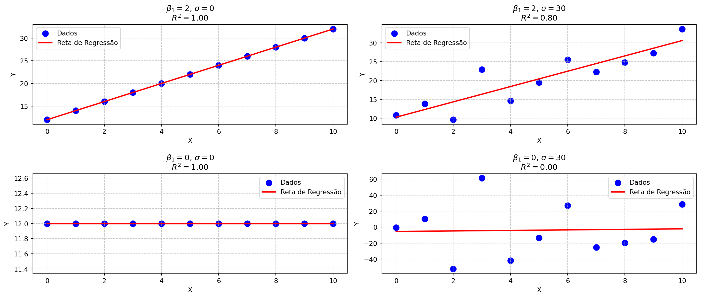

Método dos Mínimos Quadrados na Regressão Linear Simples
Representação Vetorial e Matricial
Fabio Cop Ferreira e William Remo Pedroso Conti
9833 - BASES DA MATEMÁTICA E ESTATÍSTICA PARA CIÊNCIAS DO MAR
Conteúdo da Aula
- Introdução à Regressão Linear Simples
- Definição dos Resíduos
- Método dos Mínimos Quadrados
- Representação Vetorial dos Resíduos
- Geometria da Solução de Mínimos Quadrados
- Solução Matricial do Método dos Mínimos Quadrados
- Valores preditos
- Soma dos quadrados dos resíduos
- Soma dos quadrados dos totais
- Coeficiente de determinação
Introdução à Regressão Linear Simples
A regressão linear simples é um método para modelar a relação entre uma variável dependente \(y\) e uma variável independente \(x\). A equação da reta ajustada é dada por:
\[ \hat{y} = \beta_0 + \beta_1 x \]
| Observação | \(x_i\) | \(y_i\) |
|---|---|---|
| \(1\) | \(x_1\) | \(y_1\) |
| \(2\) | \(x_2\) | \(y_2\) |
| \(3\) | \(x_3\) | \(y_3\) |
| \(\vdots\) | \(\vdots\) | \(\vdots\) |
| \(n\) | \(x_n\) | \(y_n\) |

Definição dos Resíduos
Na figura abaixo, os resíduos \(e_i\) representam as diferenças entre os valores observados \(y_i\) e os valores ajustados \(\hat{y}_i\) pela reta de regressão:
\[ e_i = y_i - (\beta_0 + \beta_1 x_i) \]
Portando na regressão linear, assume-se que o valor observado em \(y_i\) é dado por:
\[ y_i = \beta_0 + \beta_1 x_i + e_i\]
Dica
Acesse o link Regresão linear Geogebra
| Observação | \(x_i\) | \(y_i\) |
|---|---|---|
| \(1\) | \(x_1\) | \(y_1\) |
| \(2\) | \(x_2\) | \(y_2\) |
| \(3\) | \(x_3\) | \(y_3\) |
| \(\vdots\) | \(\vdots\) | \(\vdots\) |
| \(n\) | \(x_n\) | \(y_n\) |
Método dos Mínimos Quadrados
O Método dos Mínimos Quadrados busca minimizar a soma dos quadrados dos resíduos:
\[ SQ_{res} = \sum_{i=1}^{n} e_i^2 = e_1^2 + e_2^2 + \cdots + e_n^2 \]
Que pode ser representada como:
\[ \begin{cases} e_1 = y_1 - (\beta_0 + \beta_1 x_1) \\ e_2 = y_2 - (\beta_0 + \beta_1 x_2) \\ \vdots \\ e_n = y_n - (\beta_0 + \beta_1 x_n) \\ \end{cases} \]
Representação Vetorial dos Resíduos
Podemos portanto representar os resíduos como vetor em que o vetor \(\vec{e}\) é igual ao vetor \(y\) menos uma combinação linear dos vetores \(\vec{f}_0\) e \(\vec{f}_0\) com constantes \(\beta_0\) e \(\beta_1\).
\[ \vec{e} = \vec{y} - (\beta_0 \vec{f}_0 + \beta_1 \vec{f}_1) \]
\[ \left[ \begin{array}{c} e_1 \\ e_2 \\ \vdots \\ e_n \\ \end{array} \right] = \left[ \begin{array}{c} y_1 - (\beta_0 + \beta_1 x_1) \\ y_2 - (\beta_0 + \beta_1 x_2) \\ \vdots \\ y_n - (\beta_0 + \beta_1 x_n) \\ \end{array} \right] = \left[ \begin{array}{c} y_1 \\ y_2 \\ \vdots \\ y_n \end{array} \right] - \left( \beta_0 \left[ \begin{array}{c} 1 \\ 1 \\ \vdots \\ 1 \\ \end{array} \right] + \beta_1 \left[ \begin{array}{c} x_1 \\ x_2 \\ \vdots \\ x_n \\ \end{array} \right] \right) \]
Onde:
\[\vec{e} = \left[ \begin{array}{c} e_1 \\ e_2 \\ \vdots \\ e_n \\ \end{array} \right]; \vec{y} = \left[ \begin{array}{c} y_1 \\ y_2 \\ \vdots \\ y_n \\ \end{array} \right]; \vec{f}_0 = \left[ \begin{array}{c} 1 \\ 1 \\ \vdots \\ 1 \\ \end{array} \right]; \vec{f}_1 = \left[ \begin{array}{c} x_1 \\ x_2 \\ \vdots \\ x_n \\ \end{array} \right]\]
Geometria da Solução de Mínimos Quadrados
A Soma dos quadrados dos resíduos (\(SQ_{res}\)) pode ser obtida pela norma ao quadrado do vetor \(\vec{e}\):
\[SQ_{res} = \Vert\vec{e}\Vert^{2}=\vec{e}\cdot\vec{e}=e_{1}^{2}+e_{2}^{2}+\cdots+e_{n}^{2}\]
Representação da Solução do MMQ no GeoGebra
O Método dos Mínimos Quadrados determina \(\beta_0\) e \(\beta_1\) de modo a minimizar o comprimento (a norma) do vetor \(\vec{e}\) que pode ser obtida impondo que o vetor \(\vec{e}\) seja ortogonal aos vetores \(\vec{f_0}\) e \(\vec{f_1}\), ou seja:
\[ \vec{f_0} \cdot \vec{e} = 0 \] \[ \vec{f_1} \cdot \vec{e} = 0 \]
Geometria da Solução de Mínimos Quadrados
\[ \left\{\begin{array} {c} \vec{f_0} \cdot \vec{e} = 0 \Leftrightarrow \vec{f_0}\cdot(\vec{y}-\beta_0\vec{f_0}-\beta_1\vec{f_1})=0\\ \vec{f_1} \cdot \vec{e} = 0 \Leftrightarrow \vec{f_1}\cdot(\vec{y}-\beta_0\vec{f_0}-\beta_1\vec{f_1})=0 \end{array} \right. \] que é equivalente a: \[ \left\{\begin{array} {c} \beta_0\vec{f_0}\cdot\vec{f_0}+\beta_1\vec{f_0}\cdot\vec{f_1}=\vec{f_0}\cdot\vec{y}\\ \beta_0\vec{f_1}\cdot\vec{f_0}+\beta_1\vec{f_1}\cdot\vec{f_1}=\vec{f_1}\cdot\vec{y} \end{array} \right. , \] que ainda pode ser escrito na forma matricial: \[ \left[ \begin{array}{cc} \vec{f_0}\cdot\vec{f_0} & \vec{f_0}\cdot\vec{f_1}\\ \vec{f_1}\cdot\vec{f_0} & \vec{f_1}\cdot\vec{f_1} \end{array} \right] \left[ \begin{array}{c} \beta_0\\ \beta_1 \end{array} \right] = \left[ \begin{array}{c} \vec{f_0}\cdot\vec{y}\\ \vec{f_1}\cdot\vec{y} \end{array} \right] \]
Solução Matricial do Método dos Mínimos Quadrados
A combinação linear:
\[ \left[ \begin{array}{cc} \vec{f_0}\cdot\vec{f_0} & \vec{f_0}\cdot\vec{f_1}\\ \vec{f_1}\cdot\vec{f_0} & \vec{f_1}\cdot\vec{f_1} \end{array} \right] \left[ \begin{array}{c} \beta_0\\ \beta_1 \end{array} \right] = \left[ \begin{array}{c} \vec{f_0}\cdot\vec{y}\\ \vec{f_1}\cdot\vec{y} \end{array} \right] \]
por ser expressa pelas matrizes:
\[X = \left[ \begin{array}{ccc} \vec{f_0} & \vdots & \vec{f_1} \end{array} \right] = \left[ \begin{array}{cc} 1 & x_1 \\ 1 & x_2 \\ \vdots & \vdots \\ 1 & x_n \\ \end{array} \right]; Y = \left[ \begin{array}{c} y_1 \\ y_2 \\ \vdots \\ y_n \\ \end{array} \right]; B = \left[ \begin{array}{c} \beta_0 \\ \beta_1 \\ \end{array} \right] \]
E finalmente:
\[B = (X^{T} X)^{-1}(X^{T}Y)\]
Calculando os valores preditos (\(\hat{y}\))
Definimos \(\mathbf{F}\) como a matriz coluna que contém os valores preditos de \(y\) (denominados \(\hat{y}\)), isto é, aquela que contém os pontos em \(y\) que se sobrepõem à reta da regressão linear. Podemos obter \(\mathbf{F}\) por meio da operação matricial abaixo:
\[\mathbf{F} = \mathbf{X}\mathbf{B}\]
\[\mathbf{F} = \left[ \begin{array}{c} \hat{y}_1 \\ \hat{y}_2 \\ \vdots & \vdots \\ \hat{y}_n \\ \end{array} \right]; \mathbf{X} = \left[ \begin{array}{cc} 1 & x_1 \\ 1 & x_2 \\ \vdots & \vdots \\ 1 & x_n \\ \end{array} \right]; \mathbf{B} = \left[ \begin{array}{c} \beta_0 \\ \beta_1 \\ \end{array} \right] \]
Vetor de resíduos (\(e\))
Finalmente, o vetor de resíduos é obtido por:
\[e = \mathbf{Y} - \mathbf{F}\]
Agora temos todos os componentes da regressão linear estabelecida inicialmente:
\[ \hat{y_i} = \beta_0 + \beta_1 x_i \]
e
\[ y_i = \hat{y_i} + e_i \]
Soma dos quadrados dos resíduos (\(SQ_{res}\))
A Soma dos quadrados dos resíduos foi definida pela expressão abaixo:
\[SQ_{res} = \Vert\vec{e}\Vert^{2}=\vec{e}\cdot\vec{e}=e_{1}^{2}+e_{2}^{2}+\cdots+e_{n}^{2}\]
Considerando \(\vec{e}\) como a matriz coluna \(\mathbf{e}\):
\[\mathbf{e} = \left[ \begin{array}{c} e_1 \\ e_2 \\ \vdots \\ e_n \\ \end{array} \right] \]
Podemos fazer:
\[SQ_{res} = \mathbf{e}^\top \mathbf{e}\]
Soma dos quadrados totais (\(SQ_{tot}\))
\(SQ_{tot}\) pode ser definido como:
\[SQ_{tot} = \sum_{i}^{n}{(y_i - \overline{y})^{2}} = (y_1 - \overline{y})^{2} + (y_2 - \overline{y})^{2} + \cdots + (y_n - \overline{y})^{2}\]
em que \(\overline{y}\) é a média aritmética de \(y\)
Podemos definir a matrix coluna \(\mathbf{D}\)
\[\mathbf{D} = \left[ \begin{array}{c} (y_1 - \overline{y})^{2} \\ (y_2 - \overline{y})^{2} \\ \vdots\\ (y_n - \overline{y})^{2} \\ \end{array} \right] \]
E obter \(SQ_{tot}\) por:
\[SQ_{tot} = \mathbf{D}^\top \mathbf{D}\]
Coeficiente de determinação (\(R^2\))
A qualidade do ajuste pode ser determinada pelo coeficiente de determinação (\(R^2\)), um índice que varia entre 0 e 1.
\[R^2 = 1 - \frac{SQ_{res}}{SQ_{tot}}\]
Coeficiente de determinação (\(R^2\))
Método dos mínimos quadrados: Resumo dos passos
Resolução do MMQ
- Definição das matrizes do sistema
\[X = \left[ \begin{array}{cc} 1 & x_1 \\ 1 & x_2 \\ \vdots & \vdots \\ 1 & x_n \\ \end{array} \right]; Y = \left[ \begin{array}{c} y_1 \\ y_2 \\ \vdots \\ y_n \\ \end{array} \right]; B = \left[ \begin{array}{c} \beta_0 \\ \beta_1 \\ \end{array} \right] \]
- Cálculo dos coeficientes
\[B = (X^{T} X)^{-1}(X^{T}Y)\]
- Valores preditos
\[\mathbf{F} = \mathbf{X}\mathbf{B}\]
- Matriz coluna de Resíduos
\[\mathbf{e} = \mathbf{Y} - \mathbf{F}\]
Qualidade do ajuste
- Soma dos quadrados dos resíduos
\[SQ_{res} = \mathbf{e}^\top \mathbf{e}\]
- Soma dos quadrados totais
\[SQ_{tot} = \mathbf{D}^\top \mathbf{D}\]
- Coeficiente de determinação
\[R^2 = 1 - \frac{SQ_{res}}{SQ_{tot}}\]

BICT Mar - Unifesp · Ecologia Numérica